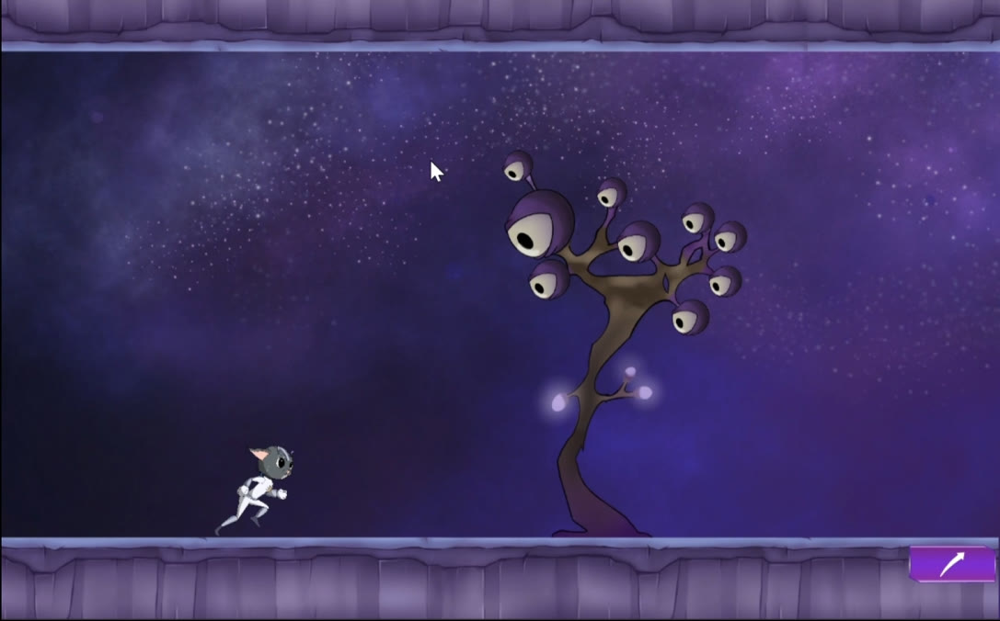
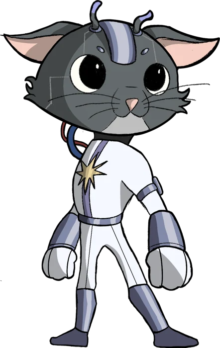

Unity
Inspired by Rayman Legends
A space cat runs, jumps and fights through a level that moves to the beat.
Icons that tell the player what the beat wants next.
Movement pieces that keep the run tense and readable.
Developed in my second year for the Game Production course, the goal was to replicate real-world game production. My team and I created a rhythm-based level inspired by Rayman Legends' beat-driven gameplay.
I served as the Producer, leading the team and making key design decisions. I also contributed to scripting gameplay mechanics, making sure they matched our creative vision and improved the player experience.
Credits. Art and animation by the team's artists. I'm not an artist: I was mainly the producer, with some programming and game design.